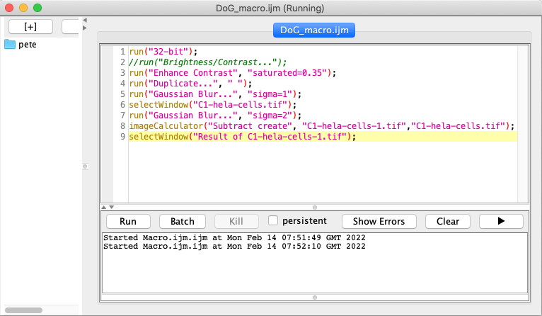

Difference of Gaussians#
Show code cell content
%load_ext autoreload
%autoreload 2
# Default imports
import sys
sys.path.append('../../../')
from helpers import *
from matplotlib import pyplot as plt
from myst_nb import glue
import numpy as np
from scipy import ndimage
Introduction#
Difference of Gaussians (DoG) filtering is a very useful technique for enhancing the appearance of small spots and edges in an image. It’s quite straightforward, but time consuming to apply manually very often – and you might need to experiment with different filter sizes to get good results. This makes it an excellent candidate for a macro.
Recording a macro#

Fig. 161 Example input image#

Fig. 162 Result of DoG filter#
Rather than diving into writing the code, the fastest way to get started is to have ImageJ do most of the hard work itself. Then you only need to fix up the result. The procedure is as follows:
Open up an example (2D, non-color) image to use, ideally one including small spot-like or otherwise round objects. I have used , after extracting the red channel only.
Start the Macro Recorder by choosing . Make sure that Record: Macro appears at the top of this window (see the drop-down list). Every subsequent click you make that has a corresponding macro command will result in the command being added to the window.
Convert your image to 32-bit. This will reduce inaccuracies due to rounding whenever the filtering is applied.
Duplicate the image.
Apply to one of the images (it doesn’t matter if it’s the original or the duplicate), using a small sigma (e.g. 1) for noise suppression.
Apply to the other image, using a larger sigma (e.g. 2).
Run and subtract the second filtered image from the first. This produces the ‘difference of Gaussians’ filtered image, in which small features should appear prominently and the background is removed.
Be careful to choose the correct image titles and subtraction operation in the Image Calculator!
Press the Create button on the macro recorder. This should cause a text file containing the recorded macro to be opened in Fiji’s (which you can find under ).
Save the text file. The file name should end with the extension
.ijm(for ‘ImageJ Macro’), and include an underscore character somewhere within it.
Now you have a macro!
You could try it out by pressing the tempting Run button, but this isn’t guaranteed to work (yet). Our macro remains quite brittle: it depends upon exact image names and might become easily confused. We will fix this soon.
As an alternative,
Close Fiji completely (to ensure nothing remains from this session)
Reopen Fiji
Open the original image you used
Open the macro (you can just drag it onto the ImageJ toolbar)
Now the Run button will hopefully give you the same result as when you applied the commands manually. If not, keep reading anyway and the following steps should fix it.
Cleaning up the code#
Now reopen your macro in the Script Editor. It should look something like mine:
{kind=link}
For easier copy-and-paste, the content is below:
run("32-bit");
//run("Brightness/Contrast...");
run("Enhance Contrast", "saturated=0.35");
run("Duplicate...", " ");
run("Gaussian Blur...", "sigma=1");
selectWindow("C1-hela-cells.tif");
run("Gaussian Blur...", "sigma=2");
imageCalculator("Subtract create", "C1-hela-cells-1.tif","C1-hela-cells.tif");
selectWindow("Result of C1-hela-cells-1.tif");
Your code is probably not identical, and may well be better. One problem with automatically generated macros is that they contain (almost) everything – often including a lot of errant clicking, or other non-essential steps. For example, I changed the contrast of an image, but this was only to look at it – and it does not need to be included in the macro.
After deleting the unnecessary lines, I get:
run("32-bit");
run("Duplicate...", "title=C1-hela-cells-1.tif");
run("Gaussian Blur...", "sigma=1");
selectWindow("C1-hela-cells.tif");
run("Gaussian Blur...", "sigma=2");
imageCalculator("Subtract create", "C1-hela-cells-1.tif","C1-hela-cells.tif");
Understanding the code#
You can most likely work out what the macro is doing, if not necessarily the terminology, just by looking at it.
Taking the first line, run is a **function_ that tells ImageJ to execute a command, while 32-bit is a piece of text (called a string) that tells it which command.
Functions always tell ImageJ to do something or give you information, and can be recognized because they are normally followed by parentheses.
Strings are recognizable both because they are inside double inverted commas and the script editor shows them in a different color.
Notice also that each line needs to end with a semicolon so that the macro interpreter knows the line is over.
Functions can require different numbers of pieces of information to do their work.
At a minimum, run needs to know the name of the command and the image to which it should be applied – which here is taken to be whichever image is currently active, i.e. the one that was selected most recently.
But if the command being used by run requires extra information of its own, then this is included as an extra string. Therefore
run("Duplicate...", "title=C1-hela-cells-1.tif");
informs the command that the image it creates should be called C1-hela-cells-1.tif, and
run("Gaussian Blur...", "sigma=1");
ensures that is executed with a sigma value of 1.
selectWindow is another function, added to the macro whenever you click on a particular window to activate it, and which requires the name of the image window to make active.
From this you can see that my example file name was C1-hela-cells.tif.
Without this line, the duplicated image would be filtered twice – and the original not at all.
Finally, the command is special enough to get its own function in the macro language, imageCalculator.
The first string it is given tells it both what sort of calculation to do, and that it should create a new image for the result – rather than replacing one of the existing images.
The next two strings give it the titles of the images needed for the calculation.
Removing title dependancies#
The fact that the original image title appears in the above macro is a problem: if you try to run it on another image, you are likely to find that it does not work because selectWindow cannot find what it’s looking for.
So the next step is to remove this title dependency so that the macro can be applied to any (2D) image.
There are two ways to go about this. One is to insert a line that tells the macro the title of the image being processed at the start, e.g.
titleOrig = getTitle();
where getTitle() is an example of a function that asks for information.
The result is then stored as a variable, so that any time we type titleOrig later this will be replaced by the string corresponding to the original title [1].
Then we just find anywhere the title appears and replace the text with our new variable name, i.e.
in this case by writing
selectWindow(titleOrig);
If we do this, the window we want will probably be activated as required. However, there is a subtle potential problem. It’s possible that we have two images open at the same time with identical titles – in which case it’s not clear which window should be selected, and so the results could be unpredictable. A safer approach is to get a reference to the image ID rather than its title. The ID is a number that should be unique for each image, which is useful for ImageJ internally but which we do not normally care about unless we are programming. Using IDs, the updated macro code then becomes:
idOrig = getImageID();
run("32-bit");
run("Duplicate...", "title=[My duplicated image]");
idDuplicate = getImageID();
run("Gaussian Blur...", "sigma=1");
selectImage(idOrig);
run("Gaussian Blur...", "sigma=2");
imageCalculator("Subtract create", idDuplicate, idOrig);
We had to change selectWindow to selectImage for the IDs to work.
I also changed the title of the duplicated image to something more meaninglessly general – which required square brackets, because it includes spaces that would otherwise mess things up [2].
Also, because the duplicated image will be active immediately after it was created, I ask ImageJ for its ID at that point. This lets me then pass the two IDs (rather than titles) to the
imageCalculator command when necessary.
Adding comments#
Whenever macros become more complicated, it can be hard to remember exactly what all the parts do and why.
It’s then a very good idea to add in some extra notes and explanations.
This is done by prefixing a line with //, after which we can write whatever we like because the macro interpreter will ignore it.
These extra notes are called comments, and I will add them from now on.
Customizing sigma values#
By changing the size of the Gaussian filters, the macro can be tailored to detecting structures of different sizes.
It would be relatively easy to find the Gaussian Blur lines and change the sigma values accordingly here, but adjusting settings like this in longer, more complex macros can be awkward.
In such cases, it’s helpful to extract the settings you might wish to change and include them at the start of the macro.
To do this here, insert the following lines at the very beginning:
// Store the Gaussian sigma values -
// sigma1 should be less than sigma2
sigma1 = 1.5;
sigma2 = 2;
Then, update the later commands to:
run("Gaussian Blur...", "sigma="+sigma1);
selectImage(idOrig);
run("Gaussian Blur...", "sigma="+sigma2);
This creates two new variables, which represent the sigma values to use. Now any time you want to change sigma1 or sigma2 you do not need to hunt through the macro for the correct lines: you can just update the lines at the top [3].
Adding interactivity#
Usually I would stop at this point.
Still, you might wish to share your macro with someone lacking your macro modification skills, in which case it would be useful to give this person a dialog box into which they could type the Gaussian sigma values that they wanted.
An easy way to do this is to remove the sigma value information from the run command lines, giving
run("Gaussian Blur...");
Since will not then know what size of filters to use, it will ask. The disadvantage of this is that the user is prompted to enter sigma values at two different times as the macro runs, which is slightly more annoying than necessary.
The alternative is to create a dialog box that asks for all the required settings in one go. To do this, update the beginning of your macro to include something like the following:
Dialog.create("Choose DoG filters");
Dialog.addNumber("Gaussian sigma 1", 1);
Dialog.addNumber("Gaussian sigma 2", 2);
Dialog.show();
sigma1 = Dialog.getNumber();
sigma2 = Dialog.getNumber();

The first line generates a dialog box with the title you specify. Each of the next two lines state that the required user input should be a number with the specified prompts and default values. The other lines simply show the dialog box and then read out whatever the user typed and puts it into variables. This is documented in ImageJ’s list of built-in macro functions.
You can download the complete example macro here.
Installing the macro#
If you’d like the macro to appear as an entry in ImageJ’s menus, you have a couple of options.
One is the tempting . This works, but whenever I tested it I found that it only retains the macro until ImageJ is restarted.
More usefully, will prompt you to first select the file containing your macro, and then to save it within the Plugins directory of ImageJ itself. As long as the macro file you choose has an underscore in its name, it should appear as its own entry towards the bottom of the menu – and be retained even when ImageJ is relaunched.
Suggested improvements#
You should now have a macro that does something vaguely useful, and which will work on most 2D images. It could nevertheless still be enhanced in many ways. For example,
You could close any unwanted images (e.g. the original and its duplicate) by selecting their IDs, and then inserting
close();commands afterwards.You could make the macro work on entire image stacks. If you want it to process each plane separately, this involves only inserting the words
stackandduplicatein several places – by recording a new macro in the same way, but using a stack as your example image, you can see where to do this. If you want the filtering to be applied in 3D, you can use the command instead ofYou could create a log of which images you have processed, possibly including the settings used. The log is output by including a
log(text);line, wheretextis some string you have created, e.g.text = Image name: + getTitle().More impressively, you could turn the macro into a full spot-detector by thresholding the DoG filtered image, and then running the command. If you want to measure original spot intensities, you should remember to go to to make sure the measurements are redirected to the original image – which you should possibly have duplicated at the beginning. Without the duplication, the original image will have been Gaussian filtered by the time your macro reaches the measurement stage.
In any case, the process of developing a macro is usually the same:
Record a macro that does basically the right thing
Remove all the superfluous lines (contrast adjustment, errant clicking etc.)
Replace the image titles with image ID references
Add comments to describe what the macro is doing
Track down bugs and make improvements